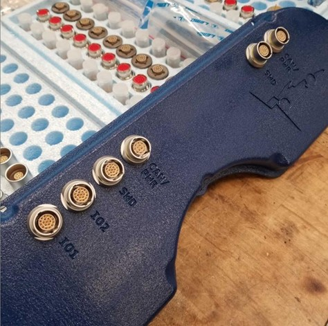
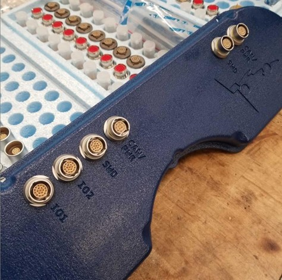

Introduction
My introduction to electrical engineering was through my university formula team, UBC Formula Electric. Throughout my time on the team, I designed my first PCBA (the PDM below) and worked my way up to designing the electronics and firmware for the most complex ECU on the vehicle: the drive inverter. I eventually led the electrical team and collaborated to design the electrical system for the 2020 vehicle. This was a significant revision from the 2018 vehicle, which placed 7th at FSAE North. Although the 2020 season was cut short by COVID-19, most of the electrical system was validated and carried over to future vehicles. Projects are listed below in order of most-to-least recent.
40kW, 600V Silicon Carbide Drive Inverter (May 2020)
I challenged myself to design the drive inverters to power a quad-motor in-hub powertrain architecture. The topology is a 3-phase half-bridge that accepts a maximum input of 600V DC and generates a 381V line-to-line output using a field-oriented control algorithm. It is engineered for the high-speed operation of the off-the-shelf AMK DD5 interior permanent magnet motor, supporting electrical frequencies up to 2kHz. This translates to a shaft speed of 24,000 RPM, though the motor is limited to 20krpm at its mechanical peak.
The inverter can provide a continuous output of 33kW, driven by 75 A(rms) of current at a coolant temperature of 60°C. For situations requiring quick bursts of acceleration, it can surge to a peak power of 53kW (pushing 100 Amps) for up to two seconds. The system manages this power using a variable switching frequency that operates up to a maximum of 20kHz.
It consists of two separate PCBs: 1) the control board, which handles computing motor controls and sensor signal processing, and 2) the power board, which connects directly to the HV bus and power stage. The power board also contains the gate drive section, consisting of isolated power supplies and gate drive ICs.
I successfully controlled the motor in speed-control mode up to 15krpm (limited due to no field weakening). Full output phase current was achieved at 600V through an inductive load at a 100Hz fundamental frequency. Unfortunately, no dyno was available to push real mechanical power through the motor, but full load current and high RPM are two of the major validation pieces necessary to prove its functionality.
Racing Dashboard Interface (May 2020)
The dashboard electronics integrate all dashboard functions of the vehicle into a single PCB to reduce wiring and complexity. An additional sensor processing board was also integrated into the enclosure to process signals from the front of the vehicle, such as wheel speed, steering angle, brake pressure, and accelerator pedal position. This unified enclosure approach helps simplify the wiring harness and reduces the number of enclosure parts, mounting hardware, and connectors required in the front of the vehicle.
 

400V, 6.3kWh Isolated Battery Management System (Jan 2020)
The battery management system (BMS) safeguards the health of a 400V, 6.3kWh lithium-ion pouch-cell battery pack. It consists of two separate PCB designs: the "Core" and the "Module" PCBs.
The Core
Disclaimer: This PCB was a collaboration with teammates, but it is important to understand the context of the module PCB described later on.
The Core acts as the brains of the battery pack. It handles all pack-related high-voltage management, such as start-up and shut-down contactor sequencing (precharge and discharge), as well as pack-level voltage and current measurement, state-of-charge estimation, and fault handling. The microcontroller is a 64-pin STM32F4, which has the right peripherals to support the functionality of this system:
- -SPI to communicate over isoSPI to the modules (more later).
- -I2C for EEPROM communication to store the state-of-charge estimation while power is off.
- -Analog readings of the bus voltage and current sensors, which are precisely synchronized with a timer to measure state-of-charge.
We found that the processor speed is more than enough to communicate with the module PCBs and achieve all other needed processing. The HV bus voltage is measured with an isolated amplifier IC, powered by a separate isolated DC/DC converter IC. HV current sensing is shunt-based, measured through an integrated, analog-out isolated sensor. The main vehicle contactors have driving circuits integrated into the contactors themselves and take a simple 24V signal to turn on and off. This signal is applied through low-side MOSFET switches.
The Module
To keep the cells from violating their limits, each individual cell in the battery pack is monitored closely. The module board is designed for this - it measures the voltage of each cell and the temperature of 50% of the cells, and it contains a circuit to balance cell voltages. The design is based around the LTC6813 battery monitoring chip, which contains circuitry to take the cell measurements and communicate back to the core board over an isolated protocol called "isoSPI," using a pulse transformer for isolation. The module boards are completely isolated from the Core to meet high and low voltage galvanic isolation requirements.
Cell Connection Strategy
To measure cell voltages and balance the cells, a physical connection is made between the cell terminals and the LTC6813 battery monitor chip. The previous architecture of this design makes thsese connections with sprung "pogo-pins" which make contact with each cell conductor to measure the voltage. The connection is between the pogo pin and aluminum bus bars, which oxidized over time and caused open-circuit contact issues. If one cell voltage goes open-circuit, the whole vehicle will shut down so these connections need to be very robust. I addressed this by choosing to mount the BMS modules directly to the battery via the electrical connection itself. A screw goes through a plated thru-hole on the PCB and taps into the busbar, forming both a mechanical and electrical connection. The screws are positively locked to prevent them from coming loose.
We were also concerned about tolerance analysis. Making an entire PCB line up with 16 poorly-toleranced cells and a prototype-level battery assembly would be a challenge. To de-risk this, I created two "daughter" boards for each segment which de-centralized the tolerancing issue. Latched connectors make the connection between the module and daughter PCBs, completing all cell connections.
Cell temperatures are measured by isolated ring-terminal thermistors, which connect to the module and daughter PCBs. This is a robust way to monitor temperature since the connection strategy is simple, and the ring terminals come assembled with the wiring and connectors. They can be connected directly into the bussing, just like the voltage monitoring connections.
Full Battery Pack Assembly
The whole pack consists of 6 module "segments" connected in series, each containing 48 lithium polymer cells. All of the module PCBs are self-powered from the batteries they monitor and communicate through a twisted-pair daisy chain link to the BMS core PCB. The BMS core sits in the "auxiliary" area of the pack, which is isolated from HV and contains an isolation monitor, HV to LV DC/DC converter, and HV system contactors.
Tractive System Active Light (2019)
This takes an isolated signal from the battery pack to indicate when the vehicle high-voltage system is above and below 60V with green and red LEDs. The high-power LEDs are designed to be visible in bright daylight conditions and are driven by constant-current LED drivers to control the brightness.
Power Conversion Module (2019)
This is a solution for a 500 W, 400 V to 24 V DC/DC converter module. The main power electronics are in an integrated board-mount module. Its output provides 24V to the low voltage system for the racecar from the 400V battery. The PCB also provides necessary input and output capacitances and fusing.
Power Distribution Module (2018)
The power distribution module is designed to safely distribute 24V to all low voltage systems in the vehicle, measure their current consumption, and power the vehicle before the high-voltage DC/DC converter is active. Its architecture eliminates the need for a traditional LV battery in the vehicle and instead uses two 18650 lithium-ion cells. The board contains 4 dual-channel high-side load switches with current sensing capability and a 120 W, 7 to 24 V boost converter.